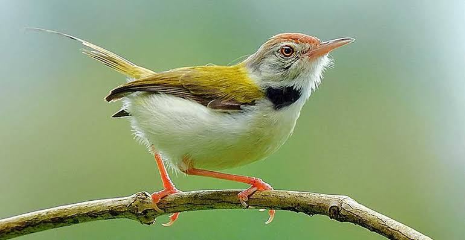

Common Tailorbird
Birds
The common tailorbird is a songbird found across tropical Asia. Popular for its nest made of leaves "sewn" together and immortalized by Rudyard Kipling as Darzee in his Jungle Book, it is a common resident in urban gardens.
Scientific name: Orthotomus sutorius
Mass: 7.5 g Encyclopedia of Life
Conservation status: Least Concern (Population stable)
Phylum: Chordata
Higher classification: Tailorbird
Order: Passerine
The common tailorbird (Orthotomus sutorius) is a songbird found across tropical Asia. Popular for its nest made of leaves "sewn" together and immortalized by Rudyard Kipling as Darzee in his Jungle Book, it is a common resident in urban gardens.
Although shy birds that are usually hidden within vegetation, their loud calls are familiar and give away their presence. They are distinctive in having a long upright tail, greenish upper body plumage and rust coloured forehead and crown.
This passerine bird is typically found in open farmland, scrub, forest edges and gardens. Tailorbirds get their name from the way their nest is constructed. The edges of a large leaf are pierced and sewn together with plant fibre or spider silk to make a cradle in which the actual nest is built.
Biology of Common Tailorbird
Taxonomy and systematics
The scientific name sutorius means "cobbler" rather than "tailor" while Orthotomus means "straight-cutting".
The species was earlier placed in the family Sylviidae but more recent molecular studies place the species within the family Cisticolidae, along with Prinia and Cisticola.
A number of subspecies are recognized within its widespread range in South Asia and Southeast Asia. The nominate race is from the lowlands of Sri Lanka.
Race O. s. fernandonis is found in the highlands of Sri Lanka. Neighbouring India has O.s. guzuratus in the peninsula and west to Pakistan while towards the north O. s. patia is found in the Terai of Nepal along the Himalayan foothills until Myanmar.
A small population of O. s. patia is also found in the northern Eastern Ghats (Wangasara).
The hills of northeastern India have O. s. luteus. In Southeast Asia O. s. inexpectatus and O. s. maculicollis are found in Thailand, Laos and Vietnam, Malaysia, Cambodia and Vietnam. South east China, including the island of Hainan, and Tonkin in Vietnam have O. s. longicauda while O. s. edela is found on Java.
This species is now placed in the genus Acridotheres that was introduced by the French ornithologist Louis Jean Pierre Vieillot in 1816.
Breeding
The breeding season is March to December peaking from June to August in India, coinciding with the wet season. In Sri Lanka the main breeding periods are March to May and August to September, although they can breed throughout the year.
Although the name is derived from their nest construction habit, the nest is not unique and is also found in many Prinia warblers.The nest is a deep cup, lined with soft materials and placed in thick foliage and the leaves holding the nest have the upper surfaces outwards making it difficult to spot.
The punctures made on the edge of the leaves are minute and do not cause browning of the leaves, further aiding camouflage. The nest lining of a nest in Sri Lanka that was studied by Casey Wood was found to be lined with lint from Euphorbia, Ceiba pentandra and Bombax malabaricum species.
Jerdon wrote that the bird made knots, however no knots are used. Wood classified the processes used by the tailorbird in nest as sewing, rivetting, lacing and matting.
In some cases the nest is made from a single large leaf, the margins of which are rivetted together. Sometimes the fibres from one rivet are extended into an adjoining puncture and appearing more like sewing.